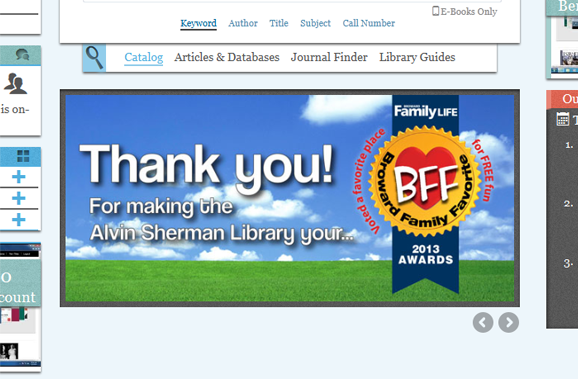
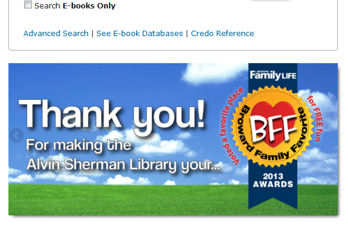
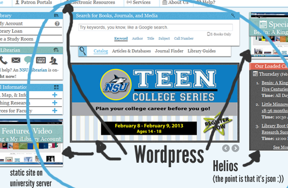

Before this talk, there was
Future Friendly Web Design for Libraries → Slides
Where I framed buzzwords like Responsive Web Design as a
Philosophy
created by the best thinkers on the web → futurefriend.ly (#FFLY)
The gist
FUTURE FRIEND.LY #FFLY
- Anticipate Disruption
-
Laser Focus s i m p l i f y
Focus your library service before your patrons do it for you.
-
C.O.P.E.: Create once, publish everywhere.
- Separating content from presentation allows for reuse.
- Mobile First Responsive Web Design
The point is about designing ethically, because
Taxes and Tuitions pay for library websites
I made two statements to get the point across
It is a disservice if a library pursues a web strategy that inevitably caters to less than the majority of its patrons.
It is wasteful if a library pursues a web strategy that requires substantial retrofitting or a redesign more than once a year.
Why #FFLY is particularly ideal for libraries
The ubiquity of the web challenges the library's mission to be accessible to its community.
#FFLY is not app-centric, rather by making fluid content and committing to a mobile-first design, the library will be accessible to the widest array of possible users.


We set some goals
- Bring every site and service under a single brand
- Figure out a workflow that trivializes widespread static updates (i.e., update to a menu)
- Liberate content creation
- Liberate the content
Tangent Variables / Programmatic Design
$primary-color: #006699; // Dark Blue
$secondary-color: #50AFDF; // Light Blue
$tertiary-color: #91CDEB; // Lighter Blue
Mobile First Example Stylesheet
/* ==================
* Foundation
* ================== */
/* ==================
* Load here only the most basic styles.*/
@import 'base';
/* ==================
* Larger Mobile Devices
* ================== */
@media only screen and (min-width: 30.062em) {
@import '481up';
}
/* ==================
* Tablets and Small Laptops
* ================== */
@media only screen and (min-width: 48em) {
@import 'grid';
@import '768up';
}
Modular Styles for Sane Development
- /scss
- modules/
- _typography.scss
- _carousel.scss
- _portlets.scss
- _base.scss
- _grid.scss
- _768up.scss
Modular Styles for Sane Development
/* ==================
* Modules
* ================== */
@import 'modules/_typography';
@import 'modules/_portlets';
/* ==================
* Foundation
* ================== */
/* ==================
* Load here only the most basic styles.*/
@import 'base';
/* == Etc ... == */Tangent Theming Hacks for Static Sites
- Apache can haz ... SSI Includes
<!--#include virtual="header.html"-->- Con: you still can't load stylesheets and scripts in the included file (the body loads first)
Tangent Theming Hacks for Static Sites
- AJAX Content (!!!)
/* ==================
* Ask a Librarian */
tinsleyfied_ask = function() {
$('section#ask-a-librarian').load('ajax/ask-a-librarian.html',
function() {
var ask_icons = $('.ask-badge span'),
ask_message = $('.ask-message');
// etc ...- Tips: Investigate HTML5 History API for URLs
- Cons: No Javascript, No Party [who cares?]
Hope for Static Sites
- An Introduction to Static Site Generators by Mickgardner
Content!?
Events Tutorials General Info News
20 Librarians → 20 Pieces of Content
1 Web Guy * 20 Content ≠ Efficent
Queue Explodes
Must Liberate Content Creation!
- Offsite Wordpress Network
- With special tweaking to make WP Backend as user-friendly as possible. i.e.:
- Login authenticates regular credentials and auto-populates profile with appropriate permissions
- Abstracted content types that repeat in all sorts of different places like carousels, hours, staff directory, policies, alerts / notices, etc. as jury-rigged custom post types
Did you know?
Worpdress & Drupal Have APIs
An example with a custom post-type made for syndicating carousels:
$.getJSON( carouselJSON )
.success(function(response) {
var carouselHTML = '';
$.each(response.posts, function( i, post) {
var thumbnail = post.thumbnail,
slide = thumbnail.replace('-125x125', '');
carouselHTML += '<li><a href="' + post.custom_fields['Link'] + '" title="' + post.title + '">';
carouselHTML += '<img src="' + slide + '" alt="' + post.custom_fields['Description'] + '">';
carouselHTML += '</a></li>';
});
$('ul.slides').html(carouselHTML);
$('.flexslider').flexslider();
}); // .getJSONBTW, carouselJSON is this string
your-wordpress-site.edu/api/get_recent_posts/?post_type=carousel_syndicated&custom_fields=Link&callback=?The JSON looks like
{
"status": "ok",
"count": 8,
"count_total": 8,
"pages": 1,
"posts": [
{
"id": 165,
"type": "carousel_syndicated",
"slug": "asl-voted-broward-family-favorite",
"url": "http:\/\/your-wordpress-site.edu\/carousels\/asl-voted-broward-family-favorite\/",
"status": "publish",
"title": "ASL voted Broward Family Favorite",
"title_plain": "ASL voted Broward Family Favorite",
"content": "",
"excerpt": "",
"date": "2013-02-04 09:38:45",
"modified": "2013-02-05 09:57:07",
"categories": [],
"tags": [],
// and so onWhich results in
and ... wherever else we put it
and ... wherever else we put it
- Create
- Once
- Publish
- Everywhere
Liberated
Librarian
Liberated
Content
Let's just look at this one more time ...
... yuck
There is SO MUCH MORE especially just the design[-by-committee] (>.<) ... For instance:
- Content Strategy
- De-Jargonification [yes!}
- Accessibility
- User Studies
- Full Out Redesign or Chunk by Chunk (I recommend the latter for small teams)